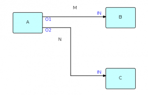
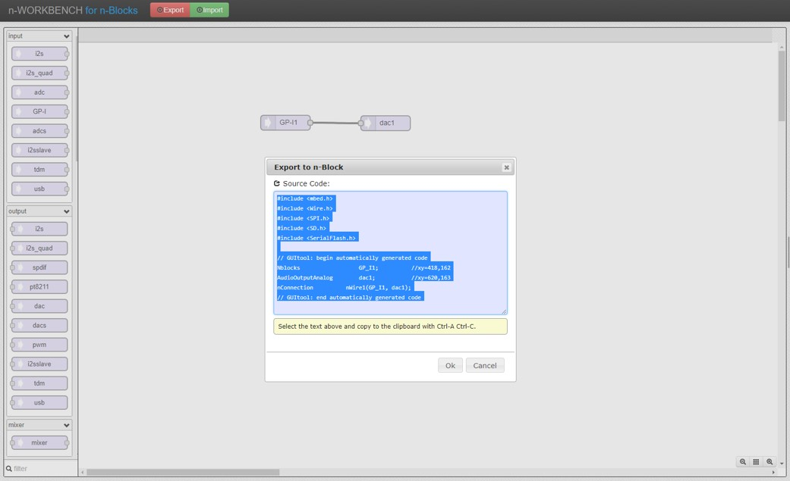
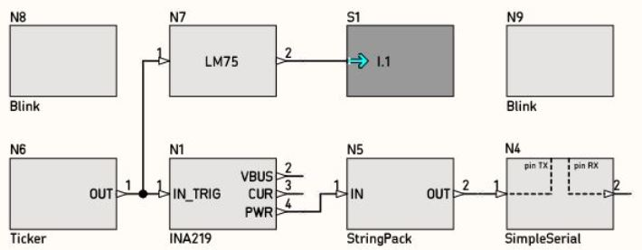
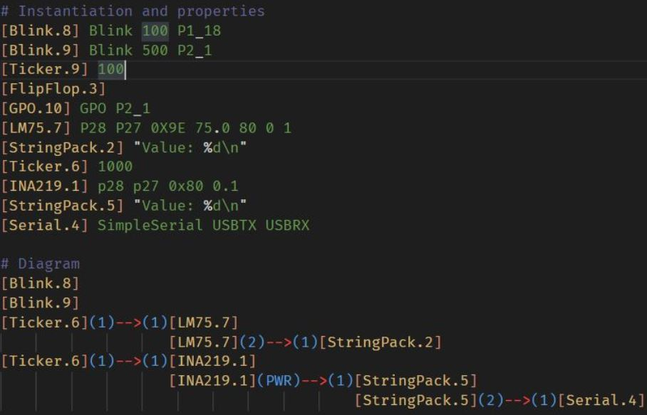
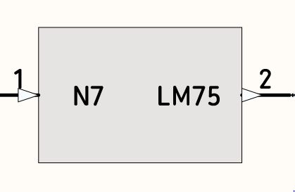
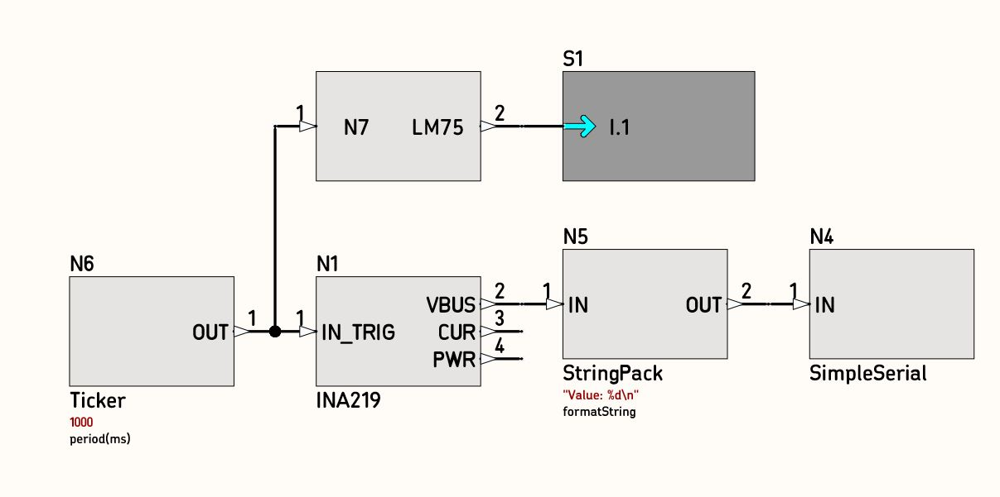
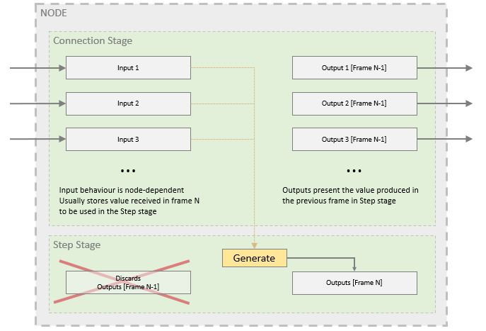
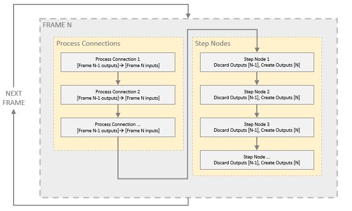

The vast majority of embedded software development is done writing textual source code. Another paradigm exists, known as flow-based programming, in which function blocks are visually connected to compose the software design.

This approach is more intuitive, and facilitates IP demonstration and maintenance.
n-Blocks Studio is a development tool to produce embedded software using the flow-based approach. It is mainly focused on developing firmware to run in the CPU-powered n-Blocks, enabling fast intuitive application development for the Internet-of-Things. Furthermore, it was developed having in mind the compatibility with other scenarios as well, becoming a general purpose embedded firmware development tool.
Due to the flow-based strategy, users are able to develop a full working application with a lower amount of code writing as compared to conventional source code, as a large part of the writing effort is replaced by graphical connections. In several cases it is even possible to develop a full application without any code writing at all.
Two counterparts were developed as part of n-Blocks Studio:
Embedded code - comprising two parts: the kernel and the nodes. The kernel is a scheduler system written as embedded code, running inside the target processor, and is responsible for running the tasks required to implement the flow based approach at run time. The nodes are also embedded source code, having a predefined interface accessible by the kernel;
The editor, which is responsible for producing firmware source code using the kernel and nodes, written automatically based in a graphical diagram.
A collaborative model was considered, in which users have an account in a server backend, are able to develop their own nodes, and upload to the system using their accounts. This allows the expansion of the tool capabilities in a similar fashion as libraries in systems like Arduino or mbed.
Four different iterations were developed as the project evolved:
the first version, called n-Workbench, was based on the open source code base of Node RED and Audio System Design Tool for Teensy Audio Library. It was a web interface running in a browser, using JavaScript as the main technology. Being a browser page imposed limitations, such as being unable to interact with the user file system, requiring the user to copy the text, paste in a file, and compile the firmware project manually.

in order to allow automatic project export and compilation from inside the software, a new version was developed from scratch using python and the 3D graphics library Panda3D. A complete solution was developed, called n-Blocks Studio 1.0, including a graphical environment as well as a server backend, to support the collaborative model. This version fulfilled the full development workflow from project creation to firmware compilation, all from the same graphical interface. It also allowed collaborative node creation, but the process was cumbersome and not developer-friendly, requiring node developers to manually paste code in their account panels in the online server backend interface. Also - and most importantly - this system did not implement any form of version control, which means node developers could not update their nodes without affecting all users.
the node creation process was reviewed and a new subsystem was developed, using the Git version control technology to keep track of node version. The n-Blocks Studio firmware generation process was reworked allowing it to fetch firmware code from Git repositories and building dependency trees, prior to embedded compilation. Node developers would then maintain their node code in repositories having all normal features provided by the Git technology and specifying the Git repository address as reference for the node, instead of placing the code itself in the server backend.
the Panda3D graphical library, although fully functional, proved to be of difficult installation for users, and forcing inconvenient development decisions (such as preventing the split of python code into modules), causing the code to be difficult to maintain in the future as the project matures. Therefore, a new version was developed, named n-Blocks Studio 2.0, separating the graphical interface from the code generation subsystem, and a command line interface was added. This allows the tool to be used with several options of design tool, including both graphical interfaces and text files. A new design language was created, called n-Blocks Studio ASCII Notation, allowing designs to be described using any text editor by typing intuitive text symbols, which are used to generate firmware just as the graphical interface.
 
There is a set of predefined NODEs.

Each node has a node_name, a set of Inputs and Outputs and two files that contain c++ code: node_name.cpp and node_name.h, that define NODE functionality.
There is a third ‘file’ with detailed information on the NODE. The NODE metadata:
The NODE metadata are stored at nBlocksStudio SERVER
The goal with nBlocksStudio is to create a working program inside a microcontroller.
The program consists of nodes and connections. In nblocksStudio we create the program with a Diagram.

The overall program behavior in nBlocksStudio is defined in the program’s main.cpp file.
The main.cpp is created directly from the diagram and contains the NODES and their CONNECTIONS in c++ syntax.
/* ================================================================ *
* Automatically generated by n-Blocks Studio Writer *
* *
* www.n-blocks.net *
* ================================================================ */
#include "nlib\nblocks.h"
// Custom nodes:
#include "nlib\Ticker\Ticker.h"
#include "nlib\StringPack\StringPack.h"
#include "nlib\SimpleSerial\SimpleSerial.h"
#include "nlib\INA219\ina219.h"
#include "nlib\LM75\lm75.h"
// -*-*- List of node objects -*-*-
nBlock_INA219 nb_nBlockNode0_INA219 (P0_7, P0_30, 90, 0.1); //(PB_11, PB_10, 90, 0.1);
nBlock_StringPack nb_nBlockNode1_StringPack ("Value: %d\n");
nBlock_SimpleSerial nb_nBlockNode2_SimpleSerial (USBTX, USBRX);
nBlock_SimpleSerial nb_nBlockNode3_SimpleSerial (USBTX, USBRX);
nBlock_StringPack nb_nBlockNode4_StringPack ("Value: %d\n");
nBlock_Ticker nb_nBlockNode5_Ticker (1000);
nBlock_LM75 nb_nBlockNode6_LM75 (P0_7, P0_30, 90, 75.0, 80.0, 0, 1); //(PB_11, PB_10, 90, 75.0, 80.0, 0, 1);
// -*-*- List of connection objects -*-*-
nBlockConnection n_conn0( &nb_nBlockNode6_LM75, 0, &nb_nBlockNode1_StringPack, 0);
nBlockConnection n_conn1( &nb_nBlockNode5_Ticker, 0, &nb_nBlockNode0_INA219, 0);
nBlockConnection n_conn2( &nb_nBlockNode5_Ticker, 0, &nb_nBlockNode6_LM75, 0);
nBlockConnection n_conn3( &nb_nBlockNode0_INA219, 0, &nb_nBlockNode4_StringPack, 0);
nBlockConnection n_conn4( &nb_nBlockNode1_StringPack, 0, &nb_nBlockNode2_SimpleSerial, 0);
nBlockConnection n_conn5( &nb_nBlockNode4_StringPack, 0, &nb_nBlockNode3_SimpleSerial, 0);
// -*-*- Main function -*-*-
int main(void) {
SetupWorkbench();
while(1) {
ProgressNodes();
// Your custom code here!
}
}
main.cpp except the NODES and their CONNECTIONS also contains an endless loop that runs the NODE’s code in a stepped manner.
in nBlocksStudio there is a 1ms Tick, which is used for the stepped exexution of code
In Every Tick All NODEs receive messages and as an output create messages or actions.
The proccessConnections function is called [for every node sequentially] and moves-in all the waiting messages.
Then the stepNodes function is called [for every node sequentially] and produce output messages that wait the next tick to be moved to their receiver NODE.
The overall scanning off all nodes connections and code, Periodically (in every Tick), is called FRAME
A FRAME is executed in 1ms period. If the overall execution time for all nodes in a FRAME is above 1ms, the next FRAME is executed immediatelly


The execution of the c++ functions (proccessConnections, stepNodes…) that create the FRAMES in a timmely manner, is managed by the nBlocksStudio Kernel.
The c++ classes that control the stepped execution of nodes code, are part of the nblockStudio Kernel.
The Kernel code consists of the files nworkbench.cpp , nworkbench.h, nBlocks.h, fifo.cpp, fifo.h
…
…